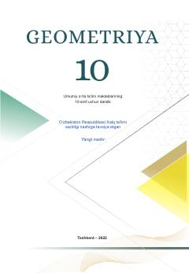

G110-sinf o‘quvchilari uchun stereometriya asoslari bo‘yicha rasmiy darslik.
Ushbu darslik umumiy o‘rta ta’lim maktablarining 10-sinf o‘quvchilari uchun mo‘ljallangan bo‘lib, stereometriya asoslarini o‘rgatadi. Kitobda fazoviy geometrik shakllar, ularning xossalari, parallellik va perpendikulyarlik mavzulari nazariy va amaliy misollar yordamida yoritilgan.